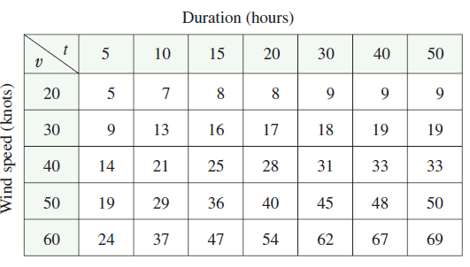

The wave heights \(h\) in the open sea depend on the speed \(v\) of the wind and the length of time \(t\) that the wind has been blowing at that speed. Values of the function \(h = f(v, t)\) are recorded in feet in the following table. Use the table to find a linear approximation to the wave height function when \(v\) is near 40 knots and \(t\) is near 20 hours. Then estimate the wave heights when the wind has been blowing for 24 hours at 43 knots.
